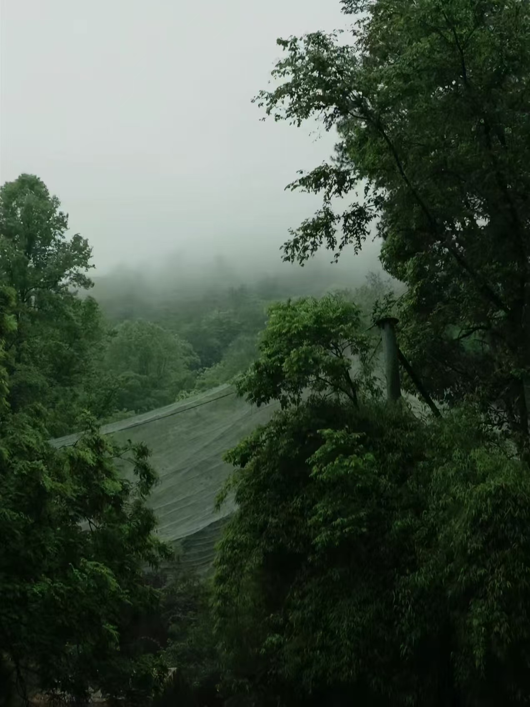
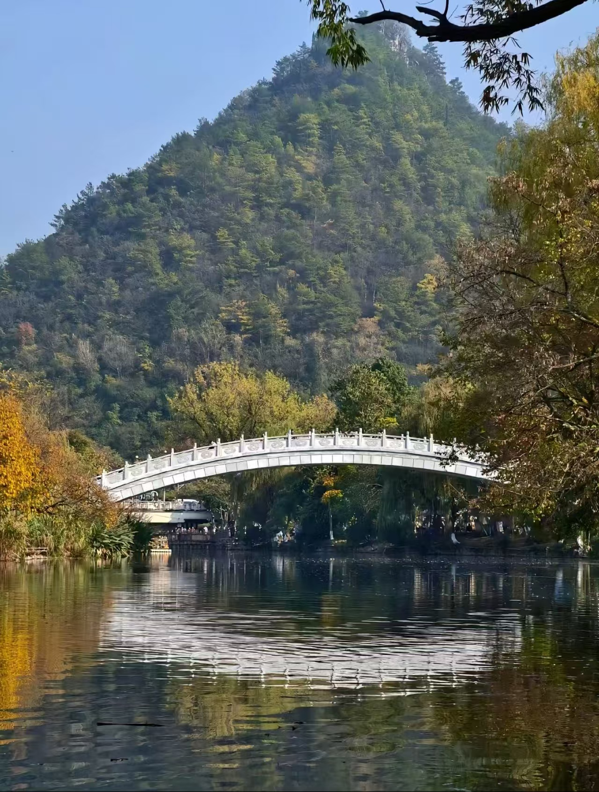
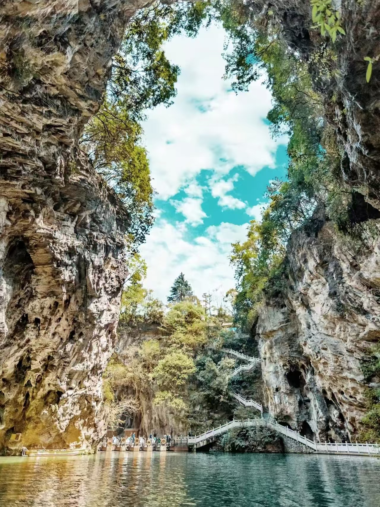
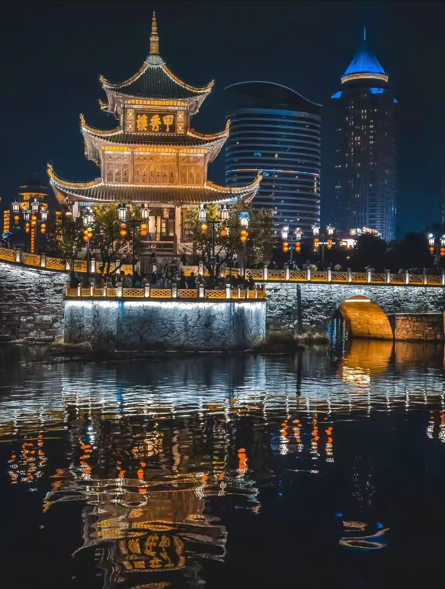
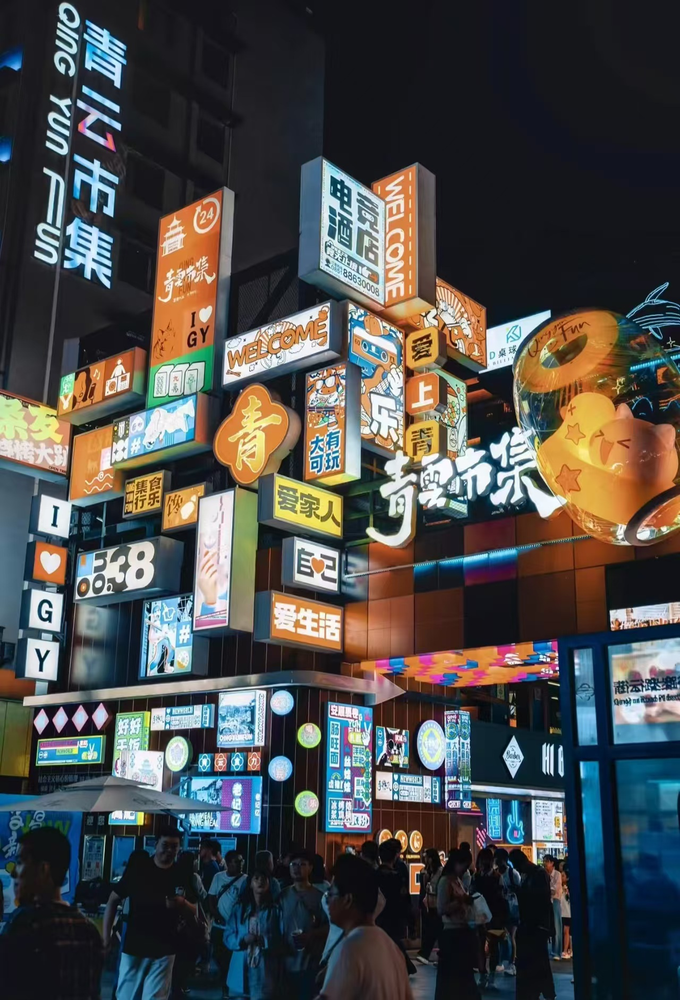

WHY GUIYANG
A Place to Slow Down
Guiyang is not a city that rushes past you. It reveals itself through soft fog in the morning, green mountains in the distance, and streets that feel lively without losing their calm. The city is known for its comfortable climate, fresh air, and natural scenery that remains close to daily life.
Here, travel is not only about checking off attractions. It is about walking a little slower, breathing a little deeper, and enjoying the balance between urban charm and the beauty of nature. Guiyang feels welcoming, gentle, and full of quiet character.
MOUNTAINS IN THE CITY
Qianling Mountain Park
Qianling Mountain Park shows how closely Guiyang is connected to nature. Forest paths, lake views, stone steps, and hillside temples come together in one of the city’s most loved green spaces. It is a place where visitors can enjoy a quiet walk while still feeling the pulse of the city nearby.
The park is also famous for its lively monkeys, which add a playful and unexpected energy to the landscape. Whether you want to hike, take photos, or simply spend a relaxed afternoon in the shade, this is a perfect introduction to Guiyang’s natural spirit.
📍 View on Map


WATER AND LIMESTONE WONDER
Huaxi Park & Tianhetan
In Huaxi Park, Guiyang feels soft and poetic. Streams pass under small bridges, trees lean over the water, and open green spaces create an atmosphere that is peaceful and romantic. It is one of the best places in the city to experience the gentle side of Guiyang.
Tianhetan offers a different mood. With waterfalls, caves, karst formations, and narrow waterways, it brings a sense of mystery and adventure. Together, these places reveal the many forms of water in Guiyang—calm, clear, and deeply tied to the landscape.
CITY LIGHTS AND LOCAL LIFE
Jiaxiu Tower & Qingyun Market
When evening arrives, Guiyang becomes warmer and more vibrant. Jiaxiu Tower, standing above the Nanming River, glows beautifully at night and reflects a graceful blend of history and city life. It is one of the most iconic images of Guiyang and a favorite place for evening walks.
For a more lively experience, Qingyun Market brings together food, lights, music, and local energy. It is a place filled with flavor and atmosphere, where visitors can taste Guiyang’s street food culture and enjoy the city’s youthful nightlife.


A JOURNEY BEYOND THE CITY
Xijiang Miao Village
Just beyond Guiyang, Xijiang Miao Village offers a deeper look into the ethnic culture of Guizhou. Layers of wooden houses, mountain views, traditional clothing, and glowing lights at night create a setting that feels both historic and magical.
It adds another dimension to a trip to Guiyang: not only modern city comfort and natural beauty, but also a connection to the living traditions that shape the wider region.
📍 View on Map